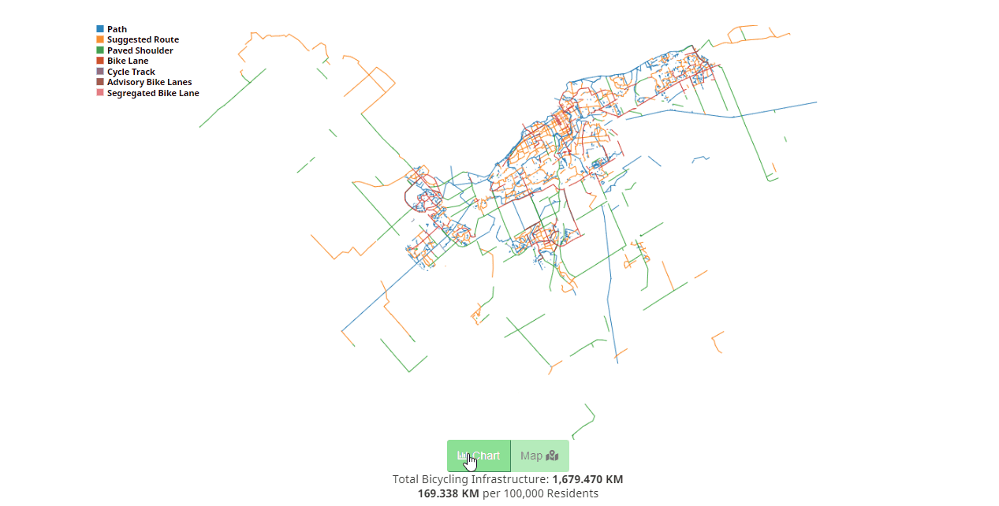

Health Infobase Design Manual
Table of contents
Transitions
Transitions allow to go smoothly from one state to another.
When to use
- When using a data set with large variety of options
- To tell a story with the data (for example, having various bar graphs transition to a stacked bar to emphasize the total)
- To engage the user into playing with the data
What to avoid
- Avoid lengthy transitions
- Confusing or complex transitions can detract users from the story
Design and code
Example 1: from vertical bars to stacked bars

Example 2: from paths on a map to horizontal bars

Content and design guidelines
- Make the transition impactful enough for users to notice change but not too impactful as to confuse them
- Aim for transitions of approximately 500 ms in length
- Follow the general design guidelines
Accessibility guidelines
- Make sure that transitions can be done without a mouse
- If the transition tells a clear story, include that story somewhere else in writing
- Follow the general accessibility guidelines
- Date modified: